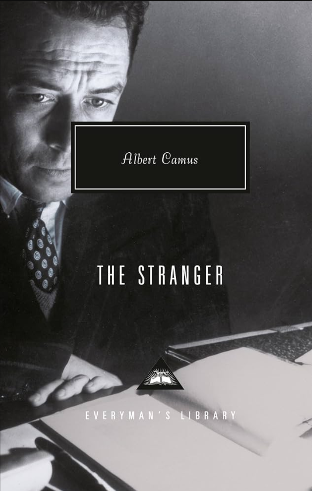
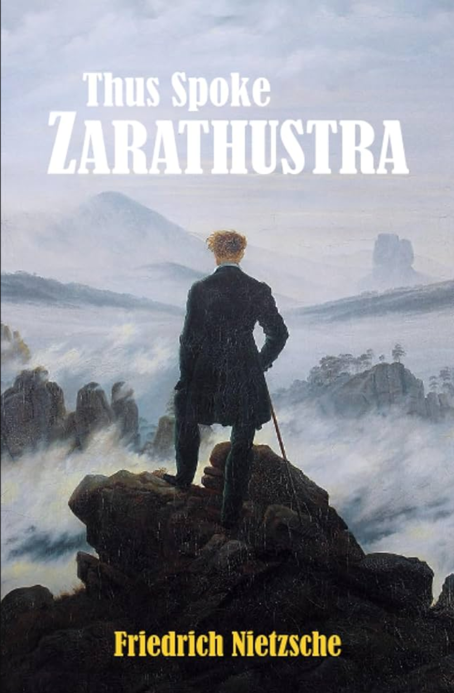
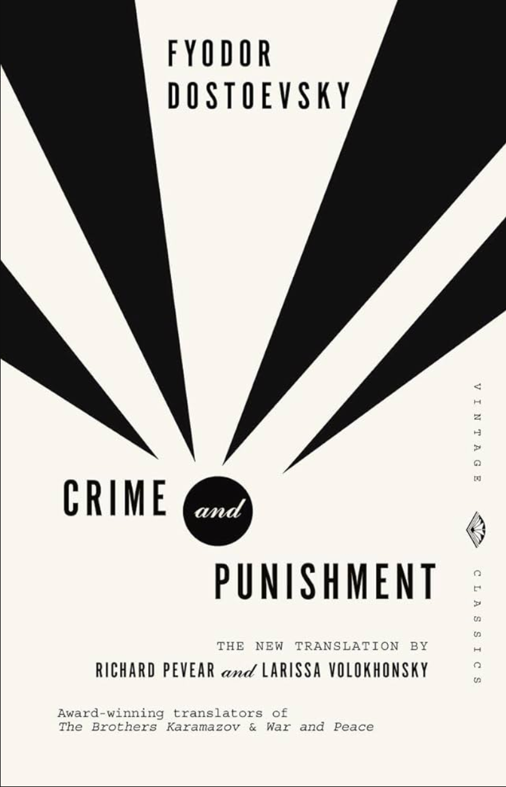
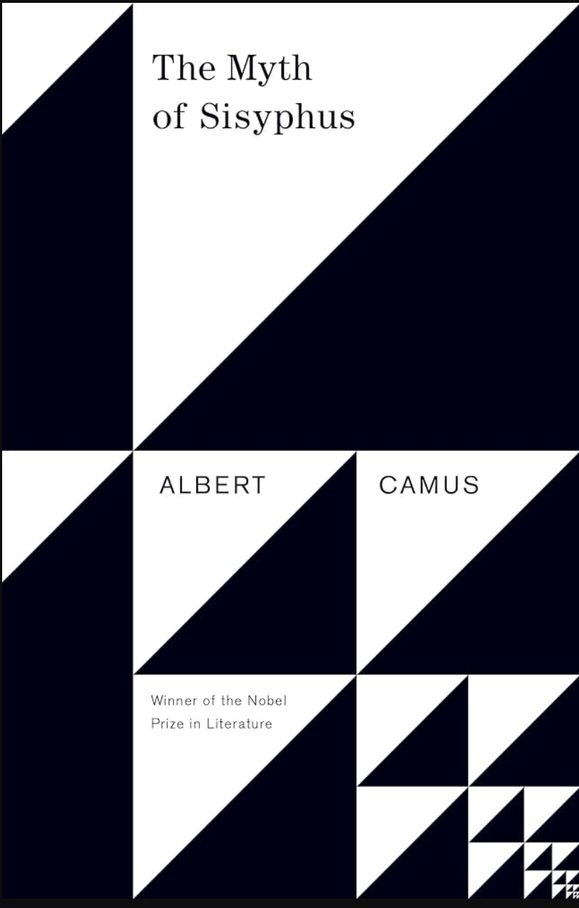
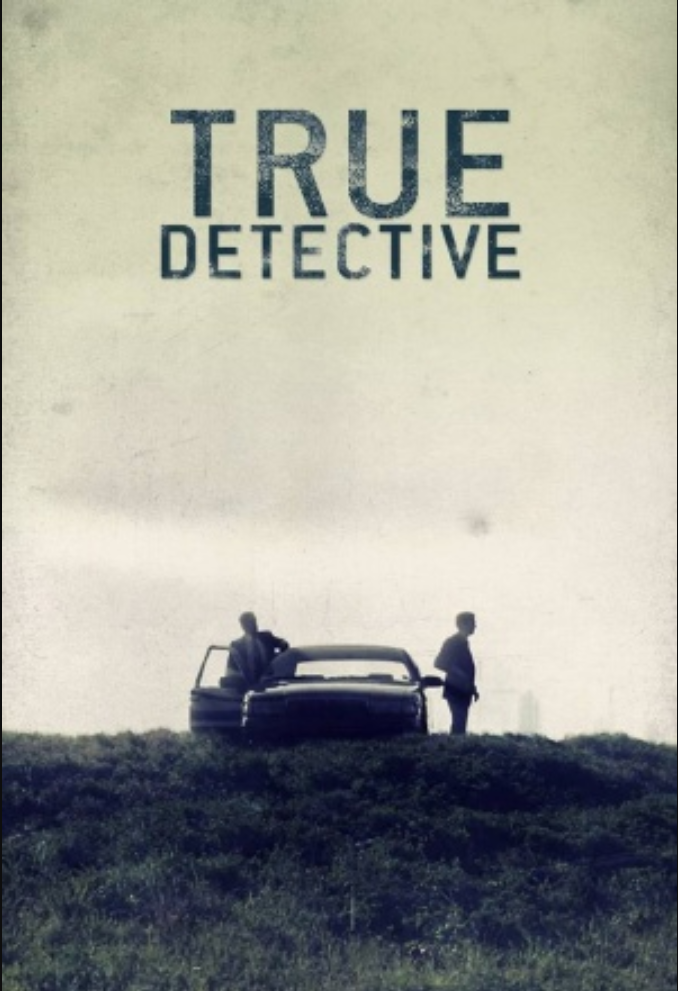
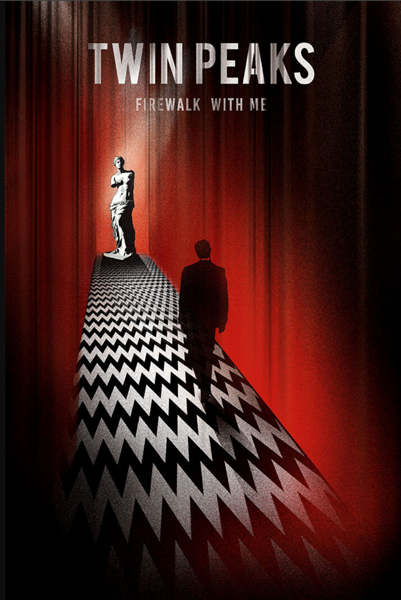
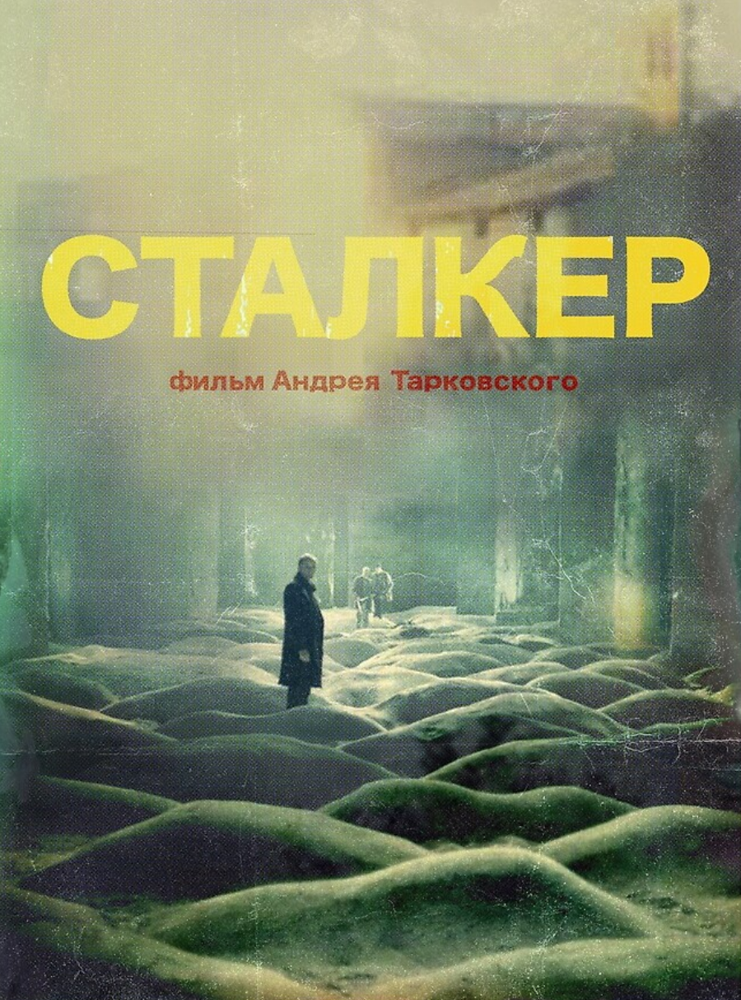

The Stranger
Albert Camus
"I laid my heart open to the benign indifference of the universe."
nishant@portfolio:~$ whoami
nishant@portfolio:~$ cat role.txt
LLM Researcher @ CYNICS / Purdue Computer Engineering
[+] now: CYNICS @ Purdue
[+] next: ESRT AI Intern
[+] degree: Purdue CpE
[+] focus: safety / stego / CV
[+] papers: PRE / MEMAUDIT
[+] systems: Modal / vLLM / AWS
[+] PRE: Algoverse / NeurIPS + EMNLP
[+] MEMAUDIT: arXiv 2605.02199
[+] metric: Awareness Elasticity
[+] protocol: package-oracle memory
[+] llm: PyTorch / HF / PEFT / vLLM
[+] systems: Modal / Docker / AWS / Linux
[+] vision: YOLOv5 / OpenCV / maritime data
[+] loop: test / debug / document / ship
[01] about
I have always been the kid who needed to know why. Science shows like Strip the Cosmos and How the Universe Works made reality feel decodable. Ben 10 made alien technology and transformation feel like an engineering problem.
That curiosity moved from watching to building. YouTube became my university before university: physics, philosophy, AI, markets, psychology. The throughline is the same one that drives my research now: AI is humanity's biggest bet for problems we cannot fully articulate yet.
When I am not probing neural networks, I am backtesting trading strategies, hunting for market edges, or reading philosophy. I think the best researchers are polymaths, and I am trying to become one.
[02] beyond

Albert Camus
"I laid my heart open to the benign indifference of the universe."

Friedrich Nietzsche
"Man is a rope stretched between the animal and the Overman."

Fyodor Dostoevsky
"The darker the night, the brighter the stars."

Fyodor Dostoevsky
"In despair we find the most acute pleasure."

Albert Camus
"The struggle itself toward the heights is enough."

Nic Pizzolatto
"Death created time to grow the things that it would kill."

David Lynch and Mark Frost
"Through the darkness of future's past, the magician longs to see."
Mulholland Drive / Blue Velvet / Eraserhead
"This whole world is wild at heart and weird on top."

Stalker / Mirror / Solaris / Nostalgia
Bryan Fuller
"The thought that my life could end at any moment frees me."
[03] work
Empire State Realty Trust (ESRT)
Agentic AI / Application Development / Copilot / ChatGPT
CYNICS Lab @ Purdue
LLMs / vLLM / Modal / Privacy / Semantic Search
Algoverse
published research
Probe-Rewrite-Evaluate / AI Safety / LLM Evaluation / NeurIPS / EMNLP
RoBoat: Autonomous Maritime Maneuvers
Computer Vision / YOLOv5 / Robotics / Deep Learning
[04] research
N. Bhargava and R. S. Barrento
An evaluation protocol for long-term LLM memory writers that scores what a system preserves before retrieval and reader reasoning intervene. MEMAUDIT frames memory selection as a finite, budget-constrained semantic optimization problem with exact package optima and external-system scorers.
arXiv:2605.02199 PDFN. Bhargava et al.
A methodology for understanding how LLMs alter behavior when they detect evaluation contexts. The work introduces Awareness Elasticity and provides a framework for measuring benchmark-deployment performance gaps.
arXiv:2509.00591[05] skills
Python / R / C / SQL / Bash / MATLAB
PyTorch / Hugging Face Transformers / transformer-lens / PEFT / LoRA / scikit-learn / OpenCV / NumPy / pandas / Weights & Biases
Linux / Docker / Modal / AWS SageMaker / S3 / EC2 / Git / vLLM / TensorRT
[06] contact
Interested in AI safety research, interpretability, ML systems, philosophy, markets, or something adjacent? Send the thread.